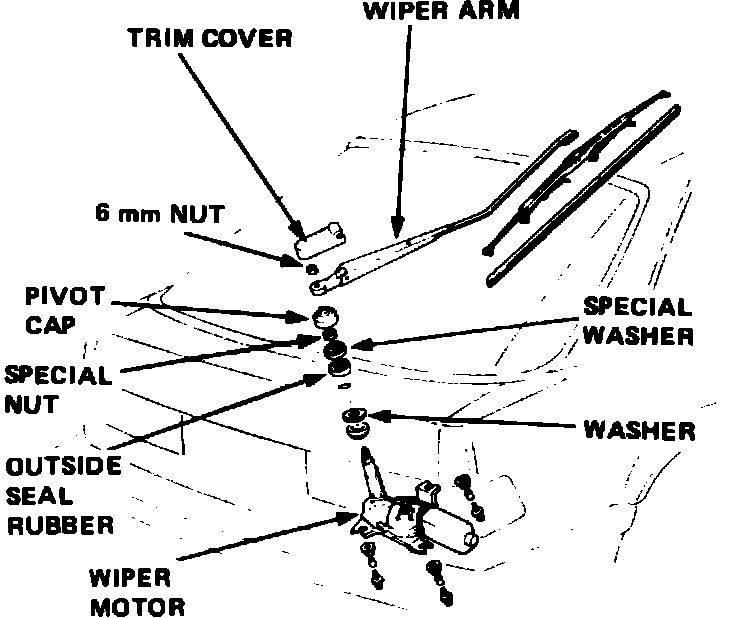

Wiper Motor: Service and Repair
Front
1. Disconnect battery ground cable.
2. Remove cap nuts and wiper arm.
3. Pry off air scoop trim clip, then remove the air scoop.
4. Pry wiper linkage away from motor arm.
5. Remove wiper motor cover, then disconnect motor electrical connector.
6. Remove wiper motor attaching bolts and the motor.
7. Reverse procedure to install, noting the following:
a. Apply suitable grease to joints and ensure linkages operate smoothly.
b. Following installation, ensure tips of wiper arms rest .8-1.2 inch from the air scoop.
Fig. 16 Rear wiper motor replacement. Integra:

Rear
1. Disconnect battery ground cable.
2. Remove hatch trim panel, then the trim cover, wiper arm attaching nut, pivot cap, nut and outside seal rubber, Fig. 16.
3. Disconnect electrical connector from wiper motor, then remove motor attaching bolts and the motor.
4. Reverse procedure to install.